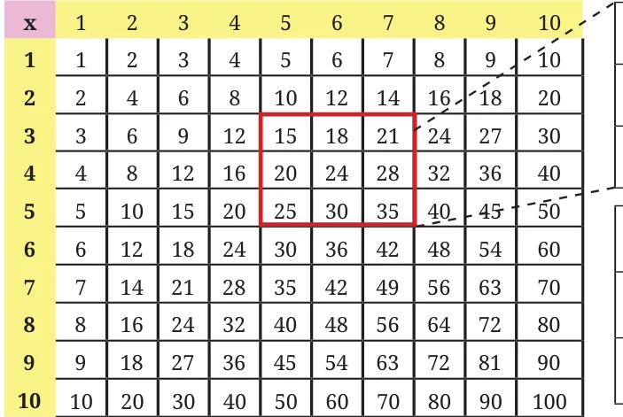

- Observe the multiplication grid below. Each number inside the grid is formed by multiplying two numbers. If the middle number of a \(3 \times 3\) frame is given by the expression \(pq\), as shown in the figure, write the expressions for the other numbers in the grid.

Ans. The expressions for the \(3 \times 3\) frame around \(pq\):
\((p-1)(q-1)\) \((p-1)q\) \((p-1)(q+1)\)
\(p(q-1)\) \(pq\) \(p(q+1)\)
\((p+1)(q-1)\) \((p+1)q\) \((p+1)(q+1)\)
- Expand the following products.
- \((3 + u)(v - 3)\)
- \(\frac{2}{3}(15 + 6a)\)
- \((10a + b)(10c + d)\)
- \((3 - x)(x - 6)\)
- \((-5a + b)(c + d)\)
- \((5 + z)(y + 9)\)
Ans.
- \(3v - 3u + uv - 9\)
- \(10 + 4a\)
- \(100ac + 10ad + 10bc + bd\)
- \(-x^2 + 9x - 18\)
- \(-5ac - 5ad + bc + bd\)
- \(5y + yz + 9z + 45\)
- Find 3 examples where the product of two numbers remains unchanged when one of them is increased by 2 and the other is decreased by 4.
Ans. Let numbers be \(a\) and \(b\). Then \((a + 2)(b - 4) = ab\). So, \(b = 2a + 4\).
Hence 3 examples are \((a = 1, b = 6)\), \((a = 2, b = 8)\), \((a = 3, b = 10)\).
- Expand (i) \((a + ab - 3b^2)(4 + b)\), and (ii) \((4y + 7)(y + 11z - 3)\).
Ans.
(i) \((a + ab - 3b^2)(4 + b) = 4(a + ab - 3b^2) + b(a + ab - 3b^2)\)
\(= 4a + 4ab - 12b^2 + ab + ab^2 - 3b^3\)
\(= 4a + 5ab + ab^2 - 12b^2 - 3b^3\)
(ii) \((4y + 7)(y + 11z - 3) = 4y(y + 11z - 3) + 7(y + 11z - 3)\)
\(= 4y^2 + 44yz - 12y + 7y + 77z - 21\)
\(= 4y^2 + 44yz + 77z - 5y - 21\)
- Expand (i) \((a - b)(a + b)\), (ii) \((a - b)(a^2 + ab + b^2)\) and (iii) \((a - b)(a^3 + a^2b + ab^2 + b^3)\). Do you see a pattern? What would be the next identity in the pattern that you see? Can you check it by expanding?
Ans.
- \(a^2 - b^2\)
- \(a^3 - b^3\)
- \(a^4 - b^4\)
Yes, a pattern is seen. Next identity in the pattern is
\((a - b)(a^4 + a^3b + a^2b^2 + ab^3 + b^4) = a^5 - b^5\)
Evaluate (i) \(94 \times 11\), (ii) \(495 \times 11\), (iii) \(3279 \times 11\), (iv) \(4791256 \times 11\).
Ans. (ii) \(495 \times 11 = 5445\). Try other parts.
What could be a general rule to multiply a number by 101 and write the product in one line? Extend this rule for multiplication by 1001, 10001, ...
Ans. \(dcba \times 101 = dcba(100 + 1) = dcba00 + dcba\)
\(dcba \times 1001 = dcba(1000 + 1) = dcba000 + dcba\)
\(dcba \times 10001 = dcba(10000 + 1) = dcba0000 + dcba\)
Use this to find (i) \(89 \times 101\), (ii) \(949 \times 101\), (iii) \(265831 \times 1001\), (iv) \(1111 \times 1001\), (v) \(9734 \times 99\) and (vi) \(23478 \times 999\).
Ans. (iii) \(265831 \times 1001 = 265831000 + 265831 = 266096831\)
(v) \(9734 \times 99 = 9734(100 - 1) = 973400 - 9734 = 963666\)
Expand the following using both Identity 1B and by applying the distributive property
(i) \((b - 6)^2\) (ii) \((-2a + 3)^2\) (iii) \(\left(7y - \frac{3}{4z}\right)^2\)
Ans. (i) \(b^2 - 12b + 36\) (ii) \(4a^2 - 12a + 9\) (iii) \(49y^2 - \frac{21y}{2z} + \frac{9}{16z^2}\)
Use Identity 1C to calculate \(98 \times 102\), and \(45 \times 55\).
Ans. \(45 \times 55 = (50 - 5)(50 + 5) = 50^2 - 5^2 = 2475\)
Try the other part for yourself.